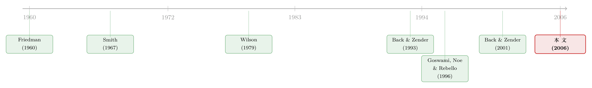

拍卖桌上的「合谋」，到底藏在哪一种规则里？
本文读的是 Sade, Schnitzlein & Zender (2006, Review of Financial Studies)：作者把三种多单位拍卖（歧视价、固定供给的统一价、可减供给的统一价）搬进实验室，让真人反复竞价。结果是——理论预言「统一价拍卖才容易出现压低价格的合谋」，可真实的合谋恰恰发生在歧视价拍卖里，于是歧视价反而成了卖方收入最低的那一种。一句被半个世纪前的弗里德曼说中、却被现代理论说反的发现。
1 引言：一个被理论「说反」的老问题
各国政府卖国债，几乎都绕不开两种规则：统一价拍卖 (uniform-price auction)——所有中标者付同一个「截标价 (stop-out price)」；以及歧视价拍卖 (discriminatory auction)——你出多少价就付多少价。美国 1990 年代从歧视价切换到统一价，法国却反向操作（从统一价切回歧视价）。一来一回，说明这道选择题至今没有标准答案。
那么，到底哪一种更容易滋生合谋、把卖方的收入压下去？
这里有一段耐人寻味的「公案」。早在 1960 年，弗里德曼 (Milton Friedman) 就主张美国财政部弃用歧视价、改用统一价。他给出的理由之一是：歧视价会增强参与者合谋的动机。换句话说，在弗里德曼眼里，歧视价才是那个「容易出事」的设计。
可接着，一个自然的问题是——现代拍卖理论怎么说？
到了 1990 年代，Back 和 Zender (1993) 的工作把答案整个翻了过来。他们证明：在统一价拍卖里，存在一类「非合作」的纳什均衡，竞买者只要不约而同地提交陡峭（缺乏弹性）的需求曲线，就能把截标价压到远低于资产价值的水平，而且谁都没有单方面偏离的动机。这种「看起来像合谋、其实是均衡」的低价结果，是统一价拍卖独有的；歧视价拍卖里则不存在。于是理论的结论变成了：统一价才是危险的那一个，歧视价反而逼出竞争。
弗里德曼说歧视价危险，现代理论说统一价危险。两边各执一词，而且都是漂亮的逻辑。真到了人坐在终端机前一遍遍出价的时候，到底谁对？
这正是本文要回答的问题。作者没有去抠某一国国债市场的真实数据（那里面混着信息不对称、赢家诅咒、库存管理一大堆噪声），而是把问题搬进实验经济学的实验室：把价值、人数、规则都钉死，只让「规则」这一个变量动，看真人会怎么玩。
用实验室回答拍卖设计问题，并不是退而求其次。多单位拍卖的策略空间极大、均衡往往不止一个，再叠加它本质上是个重复博弈——这些都让纯理论的收入比较几乎无法一锤定音。实验室恰恰能把这些维度一个个控制住。
2 三种规则，三套理论预言
作者比较的是三种拍卖：
- 统一价 + 固定供给（uniform-fixed）：供给量钉死，所有中标者付同一个截标价。
- 歧视价（discriminatory）：供给量钉死，但每个中标单位按各自的出价付钱。
- 统一价 + 可减供给（uniform-reducible）：这是近年才被理论重视的设计——卖方先宣布一个目标供给量，但看到出价之后，保留把供给量往下砍的权利。
要理解三者的差别，关键是去看需求曲线该有多「陡」。
先说统一价固定供给。它的「软肋」在于：竞买者可以提交很陡的需求曲线，于是大家心照不宣地以一个远低于价值的低价瓜分掉全部货物。为什么这能成为均衡？因为想多抢货的人，必须「出价压过」别人那些陡峭的曲线，而别人的陡峭曲线意味着——你每多抢一个单位，所有单位的成交价都被一起抬高一大截。更妙的是，由于统一价规则，那些撑在高位、根本不会成交的「边际内 (inframarginal)」高报价对竞买者是零成本的。个人需求曲线越陡，能撑住的截标价就越低 [Back and Zender (1993) 的定理 1]。
这就是统一价拍卖里所谓「策略优势」的来源：陡峭的报价让别人多抢一单位的边际成本变得极高，从而抑制了竞争，把价格摁在地板上。它看起来像合谋，但每个人都没有偏离的动机——它是货真价实的纳什均衡。
接着是歧视价。这里高报价不再是免费的：你报多高，中标就付多高。所以竞买者倾向于交更平（更有弹性）的报价曲线。在一个「无摩擦」的连续价格、共同价值的设定里，歧视价拍卖的任何纳什均衡都会收敛到竞争性结果 [Back and Zender (1993) 的定理 3]。
不过本文的实验用的是离散价格网格（只能报 17、18、19、20）。离散本身就是一种摩擦，它把价格竞争挡了一道。于是歧视价拍卖的唯一「不被弱劣策略支配」的均衡，不是竞争价 20，而是——
命题 2（Proposition 2）：歧视价拍卖中唯一的非弱劣纳什均衡，是所有竞买者都在价格 19 上申报 26 个单位的需求。
道理很直白：价值已知等于 20，谁在价格 20 上抢货都只能拿到零收益（这是弱劣策略）；那么下一个可用价位 19 就成了焦点。只要预期至少有一个对手会按 19 出价，自己也按 19 出价就是最优的。相比统一价固定供给，歧视价的均衡报价更平、折扣更小，理论上卖方收入应当更高。
3 模型核心：可减供给如何把需求曲线「拉直」
第三种设计——可减供给——是这条研究线里最新、也最巧妙的一招，值得单独拆开讲。它来自 Back and Zender (2001)。
直觉是这样的：统一价拍卖里竞买者敢交陡峭曲线、压低价格，前提是「供给量是固定的、卖方只能认」。可一旦卖方保留了事后砍量的权利，竞买者的算盘就被打乱了——你把曲线交得越陡，卖方就越有动力砍掉一部分供给，用「减少卖出的数量」去换「更高的截标价」。被砍量对竞买者永远是严格变差的。于是这个权利等于在竞买者头上悬了一把剑，限制了均衡报价曲线能有多陡。
把卖方的行为写成一个最优化问题。设卖方对偏离目标供给 \(Q^{*}\) 设定了一个成本函数
$$ C(Q) = k\,(Q^{*} - Q),\qquad Q \le Q^{*} $$
其中 \(k\) 是每少卖一个单位的边际成本。看到全部报价、聚合出总需求曲线后，卖方挑一个实际供给量 \(Q\) 来最大化净利润。把「收入 = 截标价 × 卖出数量」写出来，卖方面对的就是：
这个式子是整套机制的钥匙。它告诉我们：当总需求曲线「足够陡」、以至于砍掉的那点量带来的截标价上升足以盖过损失的销量时，卖方就会动手砍量。竞买者预见到这一点，就不敢把曲线交得太陡。曲线的斜率被限制住，而我们已经知道——更陡的曲线对应更低的可持续截标价——所以限制斜率，等于限制了竞买者行使「策略优势」的空间 [Back and Zender (2001) 的定理 2]。
成本参数 \(k\) 的大小决定了这把剑有多锋利：
命题 3（Proposition 3）：在可减供给的统一价拍卖中：(i) 若卖方砍量无成本（\(k = 0\)），唯一均衡就是竞争性结果（截标价 20）；(ii) 若 \(k = 8\)，卖方不太舍得砍量，于是价格 18、19、20 都能被撑成均衡，只有 17 撑不住。
本文实验里取 \(k = 0\)，为的是让「卖方事后选量」这把剑最锋利、让均衡唯一——理论上，竞买者应当被逼到只能交最平的曲线，把价格顶到 20。
作为对照，统一价固定供给那一侧的均衡则「百花齐放」。简单套用 Back and Zender (1993)：
命题 1（Proposition 1）：四个可报价位都能被某组均衡报价撑成截标价。例如要撑出截标价 18，所有竞买者在 20 和 19 上合计申报 5 个单位（其中至少 4 个在 20），再在 18 上申报 21 个单位。所有对称均衡里，每个竞买者最终拿到 \(5\tfrac15\) 个单位（$26/5 = 5.2$）。
四个均衡里，截标价 17 的那一组是帕累托占优、也是唯一「抗联盟 (coalition-proof)」的；相对截标价 18 的均衡，每个竞买者在这里能多拿到 fr.5.2 的收益。
于是三套理论预言摆在桌面上，按卖方收入排序应该是：
- 竞买曲线在歧视价、可减供给里都应当更平、折扣更小（相对统一价固定供给）；
- 卖方平均收入应当是 可减供给 > 歧视价 > 统一价固定供给；
- 各机制下的分配应当大体对称、且彼此无显著差异。
记住这个排序——尤其是第 2 条把歧视价排在固定供给之上。下文的反转，就反在这里。
4 实验设计：26 个 widget、5 个人、一个共同价值
作者搭的实验环境干净利落。每场拍卖里 \(n = 5\) 名竞买者争夺 \(Q^{*} = 26\) 个被称作「widget」的物品。为了把赢家诅咒 (winner's curse) 这个干扰彻底关掉、只留下纯粹的策略博弈，作者让「widget 的二级市场价值等于 20」成为共同知识。每名竞买者在每场拍卖里于四个允许价位（17、18、19、20）各提交一个数量订单，总需求量不得超过 26。
收益 = 对每个分到手的单位，用价值 20 减去实付价格，再加总。在截标价上若供不应求，则按比例配给 (pro rata)。
几个让「合谋更可能发生」的设计细节，恰恰是本文的用意所在：
- 只有 5 个人。大量实验证据表明，四个人往往就足以逼出竞争性结果——作者特意把人数压到「竞争仍是预期、但合谋的门槛很低」的区间。
- 竞买者明知自己在玩一场重复博弈，一场 session 至少打 14 轮。
- 允许在拍卖前和拍卖中进行非约束性沟通 (nonbinding communication)，但各自的下单绝对保密——能动嘴皮子，却不能立约。
- 被试既有学生，也有金融业专业人士：以色列央行货币部（亲手操盘国债拍卖的人）和一家投行的共同基金、养老金经理。作者想顺便看看「老练程度」要不要紧。
这套设计的精神，可以和《教科书里那个「不存在」的市场，其实每天都在东京开门》对照着读——都是把一套抽象的市场机制放到真实参与者手里，看理论的骨架还撑不撑得住。
5 主要结果：反转发生在歧视价这一边
第一个结果，对所有三种机制都成立，也最让人扫兴：真人的出价策略，普遍与理论识别出的均衡策略不一致——无论看个人需求曲线还是看聚合需求曲线。理论给的那套「精确的积木」（比如「头 6 个单位锁定截标价、剩下 20 个单位只为多分一点第 26 个单位」），真人基本不照着搭。
但真正关键的一步，在收入排序上。
理论第 2 条预言：可减供给 > 歧视价 > 固定供给。实验里，可减供给确实平均收入高于固定供给（与理论同向），但差异在统计上不显著。这一半算是「弱弱地对了」。
可另一半彻底反了。歧视价拍卖被发现是最容易滋生合谋的那一种——于是它生成了三种机制里最低的平均收入。理论本来把它排在固定供给之上，现实却把它摁到了最底下。
这就是全文的「反转」：现代理论（Back–Zender）说统一价才该出现压价合谋，歧视价该逼出竞争。实验却说——歧视价才是合谋的温床。半个多世纪前弗里德曼凭直觉说的「歧视价增强合谋动机」，反而被实验室里的真人验证了。
为什么会这样？一个合理的解读是：歧视价拍卖的理论均衡本就停在价格 19（命题 2），它本身已经是个「低于价值」的、带合谋味道的落点；再叠加上只有 5 个人、能沟通、又反复博弈的环境，参与者很容易把彼此协调到 19 甚至更低的共识价位上，而离散价格网格又恰好给这种协调提供了一个稳稳的「焦点」。统一价那边虽然理论上能压到 17，但多重均衡反而让参与者难以协调到同一个低点。
值得强调的是，理论也不是全盘皆错。第 1 条预言——竞买曲线在歧视价、可减供给里应当更平、更有弹性（相对固定供给）——在数据里是站得住的。也就是说，理论关于「需求曲线形状」的定性预言对了，错的是把这种形状一路外推到「收入高低」的那一步。
至于分配的对称性（第 3 条预言「应当大体对称、无显著差异」），实验给出的排序是：歧视价最对称，固定供给次之，可减供给最不对称——三者之间是有差别的，并非理论说的「无显著差异」。对很多卖方而言这并非小事：一级市场分配越均匀、参与越广，往往意味着二级市场质量越高。
把本文的发现和真实国债市场放在一起看会更有味道。真实拍卖里交易商的库存管理、抢量行为同样会扭曲价格——这一点可参见《国债拍卖的「接盘人」：一级交易商如何吞下、扛住、再卖出一波又一波供给》；而当拍卖机制本身出问题、市场「冻住」时会发生什么，则可参见《「冻住」的市场，还是算清楚账的投资者？——重看拍卖利率证券的崩塌》。
6 文献脉络
这条研究线，是一场「直觉 → 理论 → 实验」三幕剧。
第一幕是直觉与早期实验。弗里德曼 (Friedman, 1960) 凭经济学直觉主张统一价、警惕歧视价。紧接着 Smith (1967) 把多单位拍卖第一次搬进实验室，比较统一价与歧视价，发现统一价下出价方差更大，但收入差异不显著。Wilson (1979) 则在理论上点出「份额拍卖 (auctions of shares)」里竞买者可以通过需求曲线行使市场势力——这为后来的「陡峭曲线压价」埋下伏笔。

第二幕是理论的精致化。Back and Zender (1993) 给出了那个关键且反直觉的结论：统一价拍卖存在「看起来像合谋」的低价均衡，而歧视价在无摩擦时收敛到竞争——这把弗里德曼的直觉整个翻了过来。八年后，Back and Zender (2001) 又补上「可减供给」这一招，证明卖方保留事后砍量的权利能大幅削掉那些低价均衡。
第三幕就是实验的裁决。最贴近本文的是 Goswami, Noe & Rebello (1996，下称 GNR)，他们用 11 个竞买者、固定供给、允许沟通，发现歧视价收入更高、统一价才被合谋侵蚀——结论和 Back–Zender 理论一致。本文与 GNR 给出了相反的收入排序：把人数压到 5、营造更利于协调的环境、并首次把「可减供给」也放进实验，结果歧视价反而成了合谋重灾区。Klemperer (2002) 那句著名的提醒在这里格外应景——拍卖文献里的多数细节都是次要的，真正要紧的是防合谋、防排挤进入、防掠夺性行为。本文恰恰把「防合谋」这一条，做成了一个干净的实验对照。
7 评论与延伸（Q&A + 研究方向）
(a) 几个可能的疑问
Q：实验室里 5 个学生玩 widget，能说明几十亿美元的真实国债拍卖吗？
直接外推当然要小心。但实验的价值不在「复制现实」，而在「隔离机制」：真实市场里赢家诅咒、库存、信息不对称全混在一起，永远无法判断收入差异到底来自哪。本文把价值设为共同知识、关掉赢家诅咒，剩下的收入排序就只能归因于规则本身。这是观测数据给不了的干净对照。
Q：本文说歧视价更易合谋，可这不正是弗里德曼 1960 年的老观点吗，有什么新意？
新意在于它同时反驳了现代理论。弗里德曼是直觉，Back–Zender (1993) 是严格的、方向相反的均衡结论，而且这个理论已经成了拍卖设计的主流参照。本文不是「证实一个老猜想」，而是「在两个对立的、都很有道理的论断之间，用实验做了裁决」——并且裁决结果偏向了被理论否定的那一方。
Q：既然真人策略「普遍不符合均衡」，那拿理论预言来比较还有意义吗？
有，而且这正是有意思的地方。理论预言可以拆成两层：需求曲线的形状（弹性），和由此推出的收入排序。实验显示形状那一层（歧视价、可减供给更平）对了，收入那一层错了。这说明问题不在「人不理性」，而在「从微观策略到宏观收入」的那一步推理，被合谋这个重复博弈因素打断了。
Q：为什么作者特意把人数压到 5 个？这是不是在「凑」出合谋？
是有意为之，但不是「凑结果」，而是设定边界条件。文献公认四人左右往往就够竞争了；作者要研究的是「竞争是预期、但合谋门槛很低」这个临界区间——真实国债拍卖恰恰常常是少数交易商周期性互动。所以 5 人 + 可沟通 + 重复博弈，是在刻意逼近真实拍卖里最担心合谋的那种结构。
Q：「可减供给」既然理论上能把价顶到竞争价，为什么实验里它相对固定供给的收入提升不显著？
这恰恰提醒我们理论与现实的落差。命题 3 在 \(k=0\) 下预言唯一竞争均衡，但真人并没有被这把「剑」完全吓住——他们的策略系统性偏离均衡，使得收入提升变小、统计上不显著。卖方事后砍量的可信度、参与者对它的理解程度，都可能削弱这把剑的锋利。
Q：分配最不对称的是可减供给，这是不是它的一个隐藏代价？
很可能是。如果卖方不仅在乎收入、还在乎二级市场质量（更广、更均匀的一级分配通常意味着更好的二级市场），那么可减供给在「收入略高但不显著」之外，还要被记上一笔「分配更不均」的账。这让三种机制的取舍变得比单看收入复杂得多。
(b) 几个可能的研究问题与提案
1. 把「可减供给」搬到公司债的簿记建档里
【经济故事】公司债发行普遍用簿记建档 (book-building)，承销商事实上握有「看到需求后调整发行量/定价」的相机权利——这与本文的可减供给惊人地相似。一个自然的问题：发行人保留事后缩量的权利，是否真能压低折扣、削掉「合谋式」的低价需求？ 【可行性】中。可用 Mergent FISD 加一级市场配售明细，识别那些公告区间后缩量发行的债券作为「准可减供给」样本，与固定规模发行对比定价。难点在缩量是内生的，需要找外生冲击（如监管对发行档期的限制）做工具变量。
2. 外资参与度与拍卖合谋的此消彼长
【经济故事】本文的合谋靠的是「少数人、能协调」。如果竞买者池子里掺入大量异质的外国投资者，协调成本上升，合谋是否会瓦解、收入是否回升？这把拍卖设计和外资持有人这条线接上了。 【可行性】中。可用各国国债拍卖的投标人构成数据（如部分财政部披露的国内/海外配售比例）做面板，被解释变量是 bid-to-cover 比与拍卖尾差 (auction tail)。识别靠资本账户开放、可投资度调整等准自然实验。
3. 离散价格网格作为「合谋焦点」的因果检验
【经济故事】本文歧视价的均衡停在 19，离散网格提供了一个天然焦点。一个干净的实验问题：把价格网格变粗或变细，合谋的强度会不会随之变化？粗网格是否更易协调到某个低价焦点？ 【可行性】高。这是纯实验室设计，只需在本文框架上把允许价位的间距作为处理变量随机分配，直接测合谋频率与卖方收入。doable，且能给真实拍卖的「最小报价单位」设计提供政策含义。
4. 老练程度真的要紧吗？专业人士 vs 学生的再检验
【经济故事】本文同时用了学生和央行/投行专业人士，但被试规模有限。专业人士是更会合谋（更懂协调），还是更守竞争纪律？这关系到「实验结论能否外推到真实交易商」。 【可行性】高。可在更大样本上把「被试类型」作为处理，比较两组的合谋达成率、偏离均衡的方向与速度。数据靠实验室招募，识别靠随机分配机制类型。
5. 沟通内容的文本分析：合谋是怎么「谈成」的？
【经济故事】既然允许非约束性沟通，那么把聊天记录留存下来、用文本方法量化「协调强度」，就能直接看到合谋是如何在话语里形成、又在哪种规则下更容易达成共识的。 【可行性】中。需要在实验中记录沟通文本，用主题/情感的文本度量构造「协调指数」，再回归到拍卖收入上。难点是因果方向（是沟通导致合谋，还是规则同时驱动两者），需配合规则的随机分配来识别。
8 我的判断
这篇文章的贡献，不在某个惊艳的系数，而在它干净地裁决了一场理论与直觉的对峙，并且裁决结果是反直觉的：被现代理论判定为「易合谋」的统一价，在实验室里反而稳健；被理论判定为「逼出竞争」的歧视价，却成了合谋的温床、收入垫底。它还首次把「可减供给」这个新机制拉进实验，并诚实地报告了它「方向对、但不显著」的尴尬结果——以及它在分配对称性上的隐藏代价。这种不替理论遮丑的态度，本身就值得肯定。
但对识别，我有两点保留。其一，结论高度依赖「5 个人 + 可沟通 + 重复博弈」这组刻意营造的、利于合谋的参数——这套环境是为了逼近真实国债市场的担忧，但它也意味着收入排序的反转可能对参数相当敏感；换一组人数或沟通规则，排序会不会又翻回去，文中样本量（统一价、歧视价各 5 场，可减供给 4 场）还不足以排除。其二，「真人策略普遍偏离均衡」这个第一结果其实很重要却被一笔带过——如果连均衡都没玩出来，那么「合谋」与「单纯的协调失败/试错」该怎么区分，值得更细的刻画。
后续我最想看到的，是把样本量做大、把价格网格和成本参数 \(k\) 都作为可控处理变量系统地扫一遍，画出「合谋强度—机制参数」的完整曲面；以及把这套实验逻辑接到真实的公司债簿记建档数据上，看「卖方事后缩量权」在场外信用市场里到底值多少钱。
参考文献
Back, K., and J. F. Zender (1993). Auctions of Divisible Goods: On the Rationale for the Treasury Experiment. Review of Financial Studies 6, 733–764.
Back, K., and J. F. Zender (2001). Auctions of Divisible Goods with Endogenous Supply. Economics Letters 73, 29–34.
Cox, C. J., L. V. Smith, and M. J. Walker (1985). Expected Revenue in Discriminative and Uniform Price Sealed Bid Auctions. In L. V. Smith (ed.), Research in Experimental Economics, Vol. 3, 183–232. JAI Press.
Friedman, M. (1960). A Program for Monetary Stability. Fordham University Press, New York.
Goswami, G., T. Noe, and M. Rebello (1996). Collusion in Uniform-Price Auctions: Experimental Evidence and Implications for Treasury Auctions. Review of Financial Studies 9, 757–785.
Klemperer, P. (2002). What Really Matters in Auction Design. Journal of Economic Perspectives 16(1), 169–189.
Miller, J. G., and R. C. Plott (1985). Revenue Generating Properties of Sealed-Bid Auctions: An Experimental Analysis of One-Price and Discriminative Processes. In L. V. Smith (ed.), Research in Experimental Economics, Vol. 3, 159–182. JAI Press.
Sade, O., C. Schnitzlein, and J. F. Zender (2006). Competition and Cooperation in Divisible Good Auctions: An Experimental Examination. Review of Financial Studies 19(1), 195–235.
Smith, L. V. (1967). Experimental Studies of Discrimination Versus Competition in Sealed-Bid Auction Markets. Journal of Business 40, 56–84.
Wilson, R. (1979). Auctions of Shares. Quarterly Journal of Economics 93, 675–698.